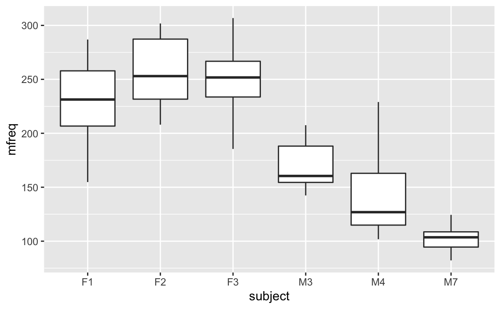
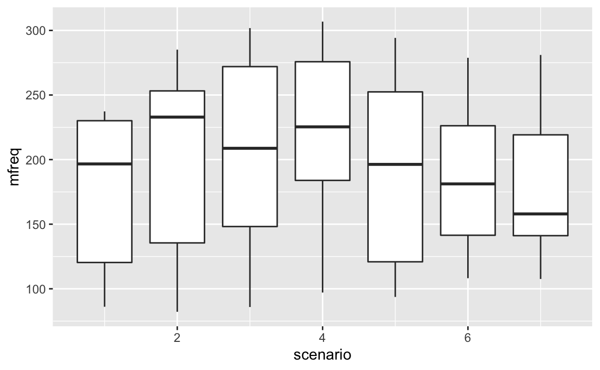

9 Multilevel Models
“When we go to run our stats and test our hypotheses about the world, what if we didn’t assume everyone was the same?”
— Ty Mckinney
“The Earth is round (p < .05).”
— Jacob Cohen
First off…
Advanced R Challenges
APPLY A “MIXED EFFECTS” MODEL TO YOUR DATASET (if it doesn’t make sense with your data, find a dataset for within and between variables in “datasets”)
9.1 Step 1. Get your data
require(tidyverse)
df <- read_csv("~/Dropbox/Teaching/MIST130DatAnOpt_22/books_resources/politeness_data.csv")
#> Rows: 84 Columns: 5
#> ── Column specification ────────────────────────────────────────────────────────
#> Delimiter: ","
#> chr (3): subject, gender, attitude
#> dbl (2): scenario, frequency
#>
#> ℹ Use `spec()` to retrieve the full column specification for this data.
#> ℹ Specify the column types or set `show_col_types = FALSE` to quiet this message.In our study, politeness is treated as a categorical factor with two levels… a formal register and an informal register. On top of that, we also had an additional fixed effect, sex, and so our formula looks more like this:
\[ pitch \sim politeness + sex + ε \]
So far so good. Now things get a little more complicated. Our design was so that we took multiple measures per subject. That is, each subject gave multiple polite responses and multiple informal responses. If we go back to the discussion of the assumptions of the linear model in Chapter 7, we can immediately see that this would violate the independence assumption: Multiple responses from the same subject cannot be regarded as independent from each other. Every person has a slightly different voice pitch, and this is going to be an idiosyncratic factor that affects all responses from the same subject, thus rendering these different responses inter-dependent rather than independent.
The way we’re going to deal with this situation is to add a random effect for subject. This allows us to resolve this non-independence by assuming a different “baseline” pitch value for each subject. So, subject 1 may have a mean voice pitch of 233 Hz across different utterances, and subject 2 may have a mean voice pitch of 210 Hz per subject. Here’s a visual depiction of how this looks like:
df %>%
na.omit() %>%
group_by(subject,scenario, attitude) %>%
summarise(mfreq = mean(frequency)) %>%
ggplot(aes(x = subject, y = mfreq)) + geom_boxplot()
#> `summarise()` has grouped output by 'subject', 'scenario'. You can override using the `.groups` argument.
We can model these individual differences by assuming different random intercepts for each subject. That is, each subject is assigned a different intercept value, and the mixed model estimates these intercepts for you.
Now you begin to see why the mixed model is called a “mixed” model. The linear models that we considered so far have been “fixed-effects-only” models that had one or more fixed effects and a general error term “ε”. With the linear model, we essentially divided the world into things that we somehow understand or that are somehow systematic (the fixed effects, or the explanatory variables); and things that we cannot control for or that we don’t understand (ε). But crucially, this latter part, the unsystematic part of the model, did not have any interesting structure. We simply had a general across-the-board error term. In the mixed model, we add one or more random effects to our fixed effects. These random effects essentially give structure to the error term “ε”. In the case of our model here, we add a random effect for “subject”, and this characterizes idiosyncratic variation that is due to individual differences. The mixture of fixed and random effects is what makes the mixed model a mixed model.
Our updated formula looks like this:
\[ pitch \sim politeness + sex + (1|subject) + ε \]
“(1|subject)” looks a little enigmatic. I’m already using the R-typical notation format here. What this is saying is “assume an intercept that’s different for each subject” … and “1” stands for the intercept here. You can think of this formula as telling your model that it should expect that there’s going to be multiple responses per subject, and these responses will depend on each subject’s baseline level. This effectively resolves the non-independence that stems from having multiple responses by the same subject.
Subjects also had to imagine asking a professor for a favor (polite condition), or asking a peer for a favor (informal condition). An example of a scenario was: item was an “excusing for coming too late” scenario, which was similarly divided between polite and informal. In total, there were 7 such different items.
df %>%
na.omit() %>%
group_by(subject,scenario, attitude) %>%
summarise(mfreq = mean(frequency)) %>%
ggplot(aes(x = scenario, y = mfreq, group = scenario)) + geom_boxplot()
#> `summarise()` has grouped output by 'subject', 'scenario'. You can override using the `.groups` argument.
# Challenge 1 -------------------------------------------------------------
# What happens if we leave out the "group" argument to aes()?
# Why?
# How do we account for variation in scenario?
We do this by adding an additional random effect:
\[ pitch \sim politeness + sex + (1|subject) + (1|item) + ε \]
9.1.1 Mixed models in R
9.1.1.1 Step 2.
For a start, we need to install the R package lme4 (Bates, Maechler & Bolker, 2012). open R and type in:
After installation, load the lme4 package into R with the following command:
library(lme4)
#> Loading required package: Matrix
#>
#> Attaching package: 'Matrix'
#> The following objects are masked from 'package:tidyr':
#>
#> expand, pack, unpackNow, you have the function lmer() available to you, which
is the mixed model equivalent of the function lm() in
tutorial 1. This function is going to construct mixed models for us.
politeness.model = lmer(frequency ~ attitude +
(1|subject) + (1|scenario), data=df)
summary(politeness.model)
#> Linear mixed model fit by REML ['lmerMod']
#> Formula: frequency ~ attitude + (1 | subject) + (1 | scenario)
#> Data: df
#>
#> REML criterion at convergence: 794
#>
#> Scaled residuals:
#> Min 1Q Median 3Q Max
#> -2.201 -0.582 -0.064 0.563 3.439
#>
#> Random effects:
#> Groups Name Variance Std.Dev.
#> scenario (Intercept) 219 14.8
#> subject (Intercept) 4015 63.4
#> Residual 646 25.4
#> Number of obs: 83, groups: scenario, 7; subject, 6
#>
#> Fixed effects:
#> Estimate Std. Error t value
#> (Intercept) 202.59 26.75 7.57
#> attitudepol -19.69 5.58 -3.53
#>
#> Correlation of Fixed Effects:
#> (Intr)
#> attitudepol -0.103
coef(politeness.model)
#> $scenario
#> (Intercept) attitudepol
#> 1 189 -19.7
#> 2 209 -19.7
#> 3 214 -19.7
#> 4 223 -19.7
#> 5 201 -19.7
#> 6 190 -19.7
#> 7 192 -19.7
#>
#> $subject
#> (Intercept) attitudepol
#> F1 241 -19.7
#> F2 267 -19.7
#> F3 260 -19.7
#> M3 179 -19.7
#> M4 155 -19.7
#> M7 113 -19.7
#>
#> attr(,"class")
#> [1] "coef.mer"Let’s focus on the output for the random effects first:
# Random effects:
# Groups Name Variance Std.Dev.
# scenario (Intercept) 219 14.80
# subject (Intercept) 4015 63.36
# Residual 646 25.42
# Number of obs: 83, groups: scenario, 7; subject, 6Have a look at the column standard deviation. This is a measure of how much variability in the dependent measure there is due to scenarios and subjects (our two random effects). You can see that scenario (“item”) has much less variability than subject. Based on our boxplots from above, where we saw more idiosyncratic differences between subjects than between items, this is to be expected. Then, you see “Residual” which stands for the variability that’s not due to either scenario or subject. This is our “ε” again, the “random” deviations from the predicted values that are not due to subjects and items. Here, this reflects the fact that each and every utterance has some factors that affect pitch that are outside of the purview of our experiment.
The fixed effects output mirrors the coefficient table that we considered in tutorial 1 when we talked about the results of our linear model analysis.
# Fixed effects:
# Estimate Std. Error t value
# (Intercept) 202.588 26.754 7.572
# attitudepol -19.695 5.585 -3.527The coefficient “attitudepol” is the slope for the categorical effect of politeness. Minus 19.695 means that to go from “informal” to “polite”, you have to go down-19.695 Hz. In other words: pitch is lower in polite speech than in informal speech,by about 20 Hz. Then, there’s a standard error associated with this slope, and a tvalue, which is simply the estimate (20 Hz) divided by the standard error (check this by performing the calculation by hand).
# Challenge 2 -------------------------------------------------------------
# this intercept is especially weird.
# It’s 202.588 Hz … where does that value come
# from?
politeness.model = lmer(frequency ~ attitude *
gender + (1|subject) +
(1|scenario), data=df)
summary(politeness.model)
#> Linear mixed model fit by REML ['lmerMod']
#> Formula: frequency ~ attitude * gender + (1 | subject) + (1 | scenario)
#> Data: df
#>
#> REML criterion at convergence: 767
#>
#> Scaled residuals:
#> Min 1Q Median 3Q Max
#> -2.119 -0.560 -0.077 0.511 3.335
#>
#> Random effects:
#> Groups Name Variance Std.Dev.
#> scenario (Intercept) 218 14.8
#> subject (Intercept) 617 24.8
#> Residual 637 25.2
#> Number of obs: 83, groups: scenario, 7; subject, 6
#>
#> Fixed effects:
#> Estimate Std. Error t value
#> (Intercept) 260.69 16.35 15.95
#> attitudepol -27.40 7.79 -3.52
#> genderM -116.20 21.73 -5.35
#> attitudepol:genderM 15.57 11.10 1.40
#>
#> Correlation of Fixed Effects:
#> (Intr) atttdp gendrM
#> attitudepol -0.238
#> genderM -0.665 0.179
#> atttdpl:gnM 0.167 -0.702 -0.252Note that compared to our earlier model without the fixed effect gender, the variation that’s associated with the random effect “subject” dropped considerably. This is because the variation that’s due to gender was confounded with the variation that’s due to subject. The model didn’t know about males and females, and so its predictions were relatively more off, creating relatively larger residuals. Now that we have added the effect of gender, we have shifted a considerable amount of the variance that was previously in the random effects component (differences between male and female individuals) to the fixed effects component.
# Random effects:
# Groups Name Variance Std.Dev.
# scenario (Intercept) 219.5 14.81
# subject (Intercept) 615.6 24.81
# Residual 645.9 25.41
# Number of obs: 83, groups: scenario, 7; subject, 6We see that males and females differ by about 109 Hz. And the intercept is now much higher (256.846 Hz), as it now represents the female category (for the informal condition). The coefficient for the effect of attitude didn’t change much.
# Fixed effects:
# Estimate Std. Error t value
# (Intercept) 256.846 16.116 15.938
# attitudepol -19.721 5.584 -3.532
# genderM -108.516 21.013 -5.164
# Significance
politeness.null = lmer(frequency ~ gender +
(1|subject) + (1|scenario), data=df,
REML=FALSE)
politeness.model = lmer(frequency ~ attitude +
gender + (1|subject) + (1|scenario),
data=df, REML=FALSE)
anova(politeness.null,politeness.model)
#> Data: df
#> Models:
#> politeness.null: frequency ~ gender + (1 | subject) + (1 | scenario)
#> politeness.model: frequency ~ attitude + gender + (1 | subject) + (1 | scenario)
#> npar AIC BIC logLik deviance Chisq Df Pr(>Chisq)
#> politeness.null 5 817 829 -403 807
#> politeness.model 6 807 822 -398 795 11.6 1 0.00065 ***
#> ---
#> Signif. codes: 0 '***' 0.001 '**' 0.01 '*' 0.05 '.' 0.1 ' ' 1
coef(politeness.model)
#> $scenario
#> (Intercept) attitudepol genderM
#> 1 243 -19.7 -109
#> 2 263 -19.7 -109
#> 3 268 -19.7 -109
#> 4 277 -19.7 -109
#> 5 255 -19.7 -109
#> 6 245 -19.7 -109
#> 7 246 -19.7 -109
#>
#> $subject
#> (Intercept) attitudepol genderM
#> F1 243 -19.7 -109
#> F2 267 -19.7 -109
#> F3 260 -19.7 -109
#> M3 284 -19.7 -109
#> M4 262 -19.7 -109
#> M7 224 -19.7 -109
#>
#> attr(,"class")
#> [1] "coef.mer"
politeness.model = lmer(frequency ~ attitude +
gender + (1+attitude|subject) +
(1+attitude|scenario),
data=df,
REML=FALSE)
#> boundary (singular) fit: see ?isSingular
politeness.null = lmer(frequency ~ gender +
(1+attitude|subject) + (1+attitude|scenario),
data=df, REML=FALSE)
#> boundary (singular) fit: see ?isSingular
anova(politeness.null,politeness.model)
#> Data: df
#> Models:
#> politeness.null: frequency ~ gender + (1 + attitude | subject) + (1 + attitude | scenario)
#> politeness.model: frequency ~ attitude + gender + (1 + attitude | subject) + (1 + attitude | scenario)
#> npar AIC BIC logLik deviance Chisq Df Pr(>Chisq)
#> politeness.null 9 820 841 -401 802
#> politeness.model 10 815 839 -397 795 6.71 1 0.0096 **
#> ---
#> Signif. codes: 0 '***' 0.001 '**' 0.01 '*' 0.05 '.' 0.1 ' ' 1
politeness.model=lmer(frequency~attitude+gender+(1+attitude|scenario), data = df, REML = F)
#> boundary (singular) fit: see ?isSingularChallenge 3
Attempt to apply the mixed model to your own dataset. How many predictors do you have? Is it appropriate? Why or why not.
Challenge 4
What is the intercept of your mixed model? What does it mean for your data?
Challenge 5
Which predictor variables predict your dependent variable? How did you determine that?
9.2 Solutions
9.2.1 Challenge 1
What happens if we leave out the “group” argument to aes()?
ggplot() only plots one boxplot.
Why?
The x = scenario only plots x on the x-axis, but geom_boxplot() needs the additional group argument to plot the scenarios individually. Otherwise, it groups all of them and plots them together.
How do we account for variation in scenario?
If we have random variation by item, then we need allow each item to have a random intercept.
9.2.2 Challenge 2
If you look back at the boxplot that we constructed earlier, you can see that the value 202.588 Hz seems to fall halfway between males and females (in the informal condition) – and this is indeed what this intercept represents. It’s the average of our data for the informal condition.
9.2.3 Challenge 3
Attempt to apply the mixed model to your own dataset. How many predictors do you have? Is it appropriate? Why or why not.
If your dataset has a repeated measures within a person, it is appropriate. If you do not